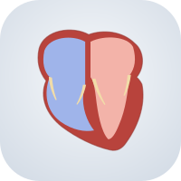

Cœur 3D
Le cœur et ses vaisseaux
Installer l'application
Menu
Pause
Recentrer
Légende
Présenter
Partager
Oreillettes
Systole
Diastole
1×
¼×
D
← patient →
G
Retour
Menu
Plan en coupe
Le cœur ouvert : 5 cavités, frontale
Valves
Aortique, mitrale, tricuspide, pulmonaire
FOP
Foramen ovale perméable, sa fermeture
Coronaires
Les artères du cœur, l'infarctus
Stimulation
Pacemaker : la pose des sondes
Imagerie
Coupes d'échographie, incidences de coronarographie
Public
Patient
Expert
Congrès
Fond sombre
Qualité maximale
Pointeur laser
Image HD
Raccourcis clavier
Échographie
Coronarographie
5 cavités
Frontale
Profondeur
Aortique
Mitrale
Tricuspide
Pulmonaire
La valve
Vue
Chirurgien
Ventricule
Doppler couleur
Fosse ovale normale
FOP · test aux bulles
Fermeture du FOP
Stimulation de branche gauche
Raccourcis clavier
→ / ←
Vue suivante / précédente (visite guidée)
Espace
Battement ou pause
R
Recentrer
P
Mode présentation (plein écran)
L
Pointeur laser
G
Légende
?
Cette aide
Échap
Fermer, quitter le plein écran